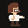
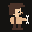
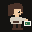
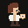
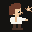
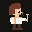
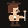

Quest log
Level is years spent in the class. Cleared quests are full. The master’s is still filling. A Ph.D. in neuroscience has not started. Professor, then university dean and founder, come after.
-

LV 2 Physicist
Changed
Universidade de São Paulo · two years, degree not finished
- Ranked among the top students across two years of physics, then changed class into engineering.
- Scientific initiation on a Bragg grating thermometer.
- Communications officer for the Physics Institute alumni academy.
- Performer with the GTPsi science theater group.
-

LV 5 Engineer
Cleared
B.S. Computer Engineering · Universidade de São Paulo, São Carlos · –
- Five-year engineering program. GPA 8.0/10.
- Scientific Mobility year at Arizona State University: computer systems engineering, GPA 3.62, Dean’s List in Fall 2013 and Spring 2014.
- Warthog Robotics. LARC robot-soccer champion in VSS, and vice-champion in 2D and 3D simulation.
- Teaching assistant for algorithms and data structures.
- GoDaddy internships on authentication UI, the URL shortener, and a WebRTC broadcast system. Second place at the 2014 intern hackathon.
- First place, USP Computer Engineering hackathon: a platform matching blood donors and recipients.
-

LV 3 Developer
Cleared
Software Engineer · GoDaddy, São Paulo · –
- Built reusable React authentication libraries, and the documentation, tests, and monitoring that went with them.
- Wrote OAuth 2.0 endpoints into the central authentication systems.
- Mentored new graduates. Ran Scrum and release planning.
- ONOVOLAB workshops for more than 300 viewers.
-

LV 7 Platform
Cleared
Senior Software Engineer, Identity Platform · GoDaddy, Seattle · –
- Led the Identity UI migration off a monolithic OpenStack Django service onto an AWS ECS Next.js app with server-side rendering.
- Defined and shipped SSO Deck: cart conversion up over 5%, CRM access from 15–20 seconds to about 2, and context-preserving login on key purchase paths.
- Login and security pages from about 4 seconds to about 1. Availability from about 98% to five nines. Resolved over a thousand production incidents.
- Led an Identity-wide security review and closed a clickjacking hole on a high-impact login page. Partner intake, epics, and EPAM leadership within budget.
- Taught Emerging Talent internships and Bootcamp, 2021–2024. Onboarded most Identity UI new hires, including VPs and senior engineers. Mentored 50+ early-career developers.
- Performance, availability, and quality awards, 2021–2023.
-
LV 2 Scholar
Active
M.S. Computer Science · University of Washington, Seattle · –
- In progress. GPA 3.98/4.00. Expected June 2027.
- Coursework underway in artificial intelligence, machine learning, deep learning, and computer security.
- The class began during the platform years and is the quest still open.
-

LV 1 Neuroscientist
Next
Ph.D. in Neuroscience · not yet started
- The class after the master’s.
-

LV 1 Professor
Later
University faculty · not yet started
- The class after the doctorate.
-

LV 1 Dean
Later
University dean and founder · not yet started
- Found a university. The class after the professorship.